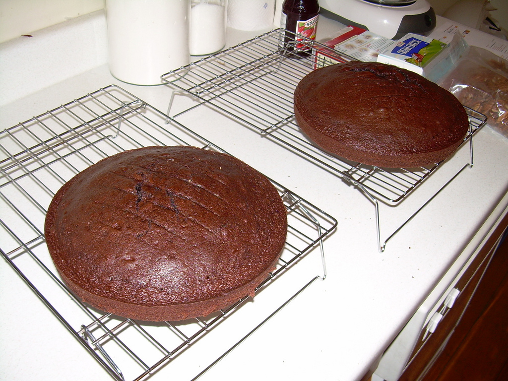

Step 5: Pour the batter into the prepared pan and spread it out evenly. Bake until the torte puffs slightly and a toothpick inserted into the center comes out very moist but not liquid, about 40 minutes. Do not overcook. Transfer the pan to a wire rack and let cool for 30 minutes.
